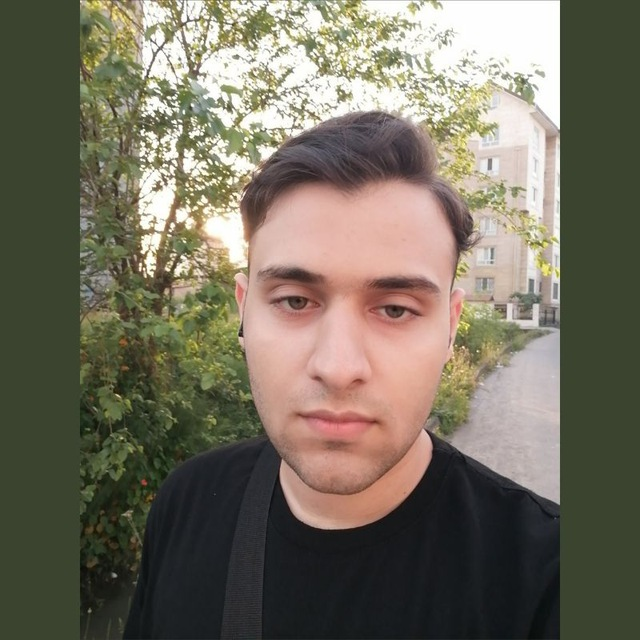

Nima Payam
Pharm.D Candidate & Computational Drug Discovery Researcher
>_ About Me
As a Pharm.D. candidate at Mazandaran University of Medical Sciences, I stand at the intersection of pharmaceutical sciences and computer science. My journey began with a passion for chemical logic—leading to my qualification as a National Chemistry Olympiad Semi-Finalist—and has evolved into Computational Drug Discovery (CADD).
I don't just memorize drug structures; I aim to design them using algorithms. I leverage Python, Pandas, and RDKit to transition from traditional "wet lab" approaches to modern "in-silico" methodologies.
⚡ Current Focus & Research
- Authoring a comprehensive Organic Chemistry textbook tailored for pharmacy students.
- Investigating In-Silico target binding methods with the Student Research Committee.
- Developing automated data parsing pipelines using Python and RDKit.
📌 Latest Updates & Notes
● Live Feed💼 Experience & Research
Focus on CADD, RDKit, molecular modeling, and authoring an Organic Chemistry textbook.
Sep 2024 – PresentOpen-access platform for organic chemistry guides and national entrance exam mentorship.
Jul 2024 – Present